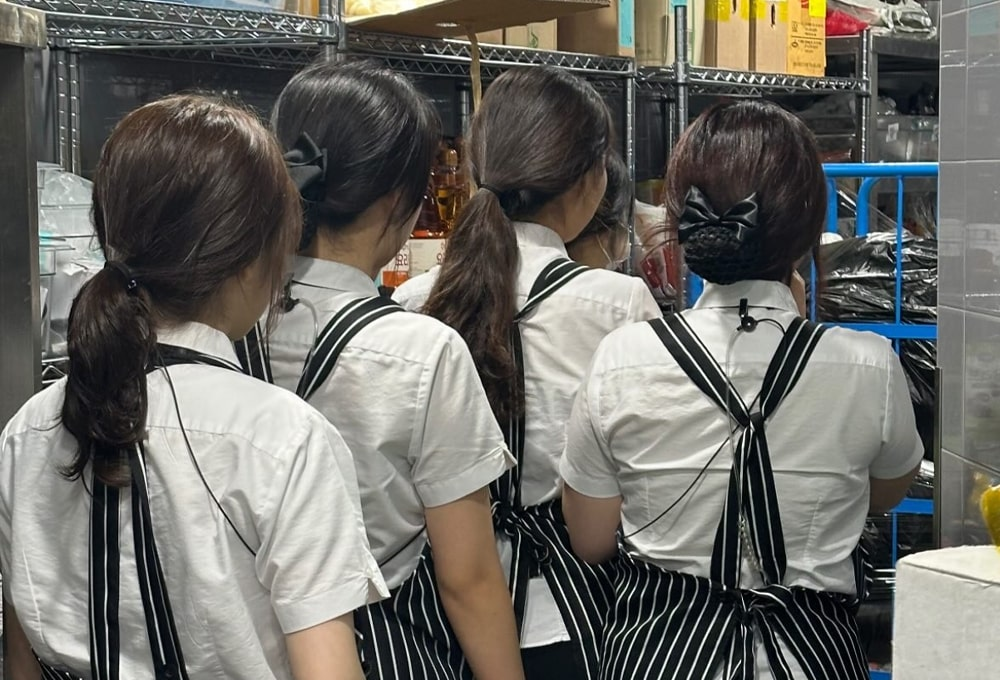
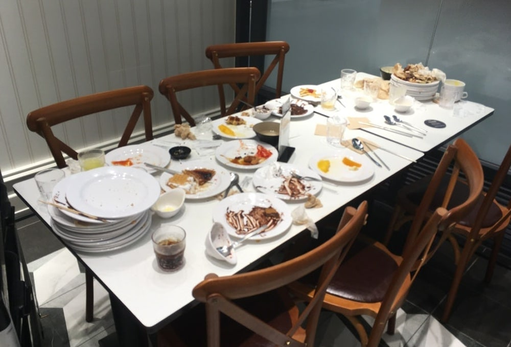
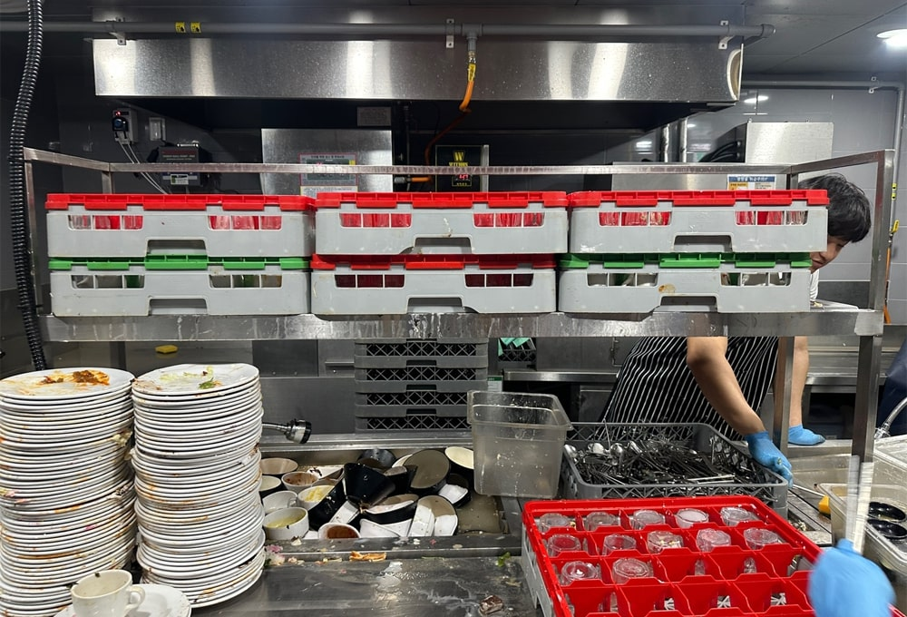
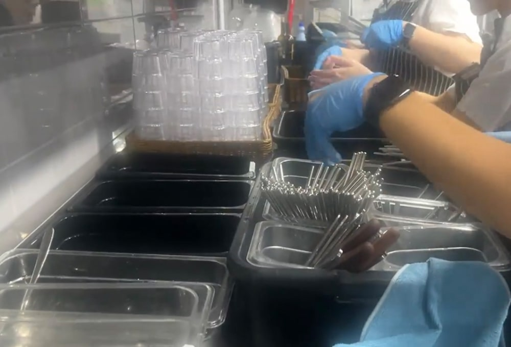
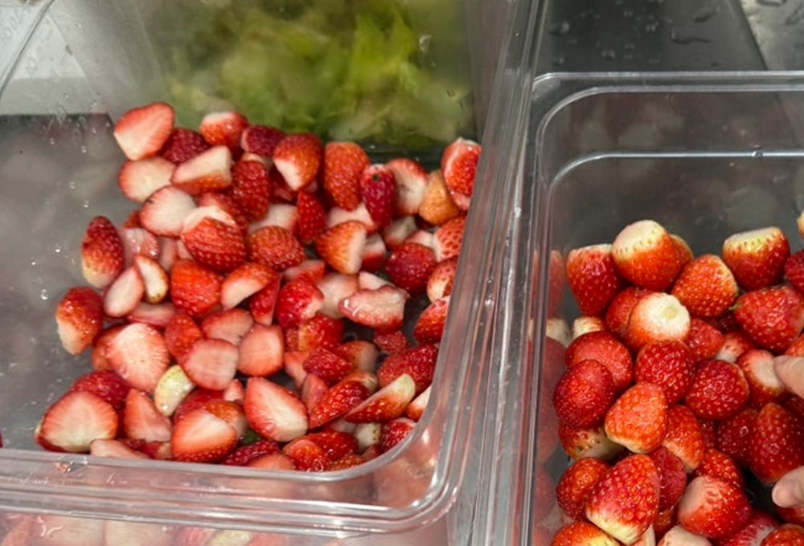
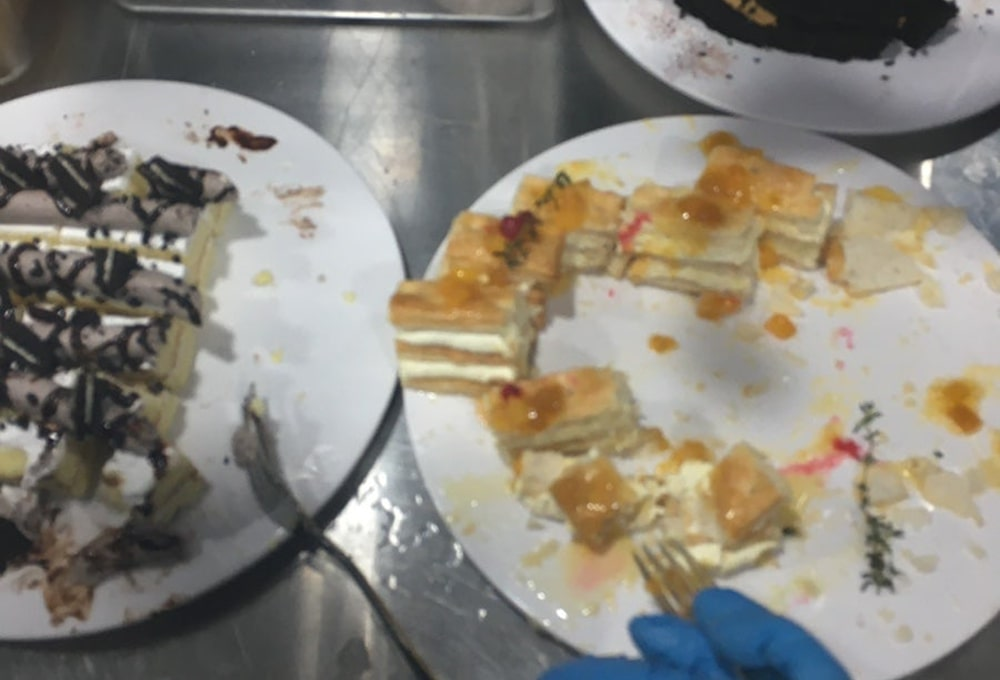
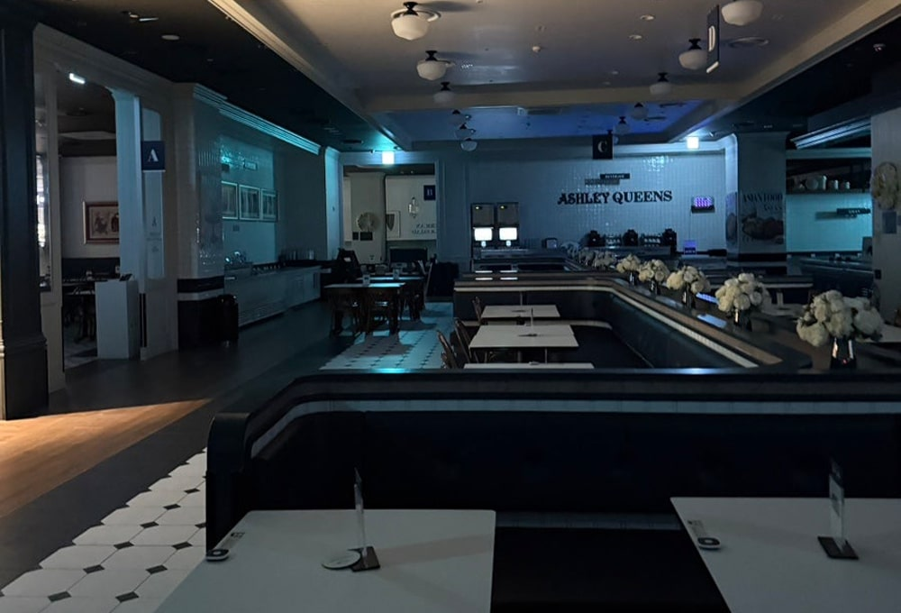
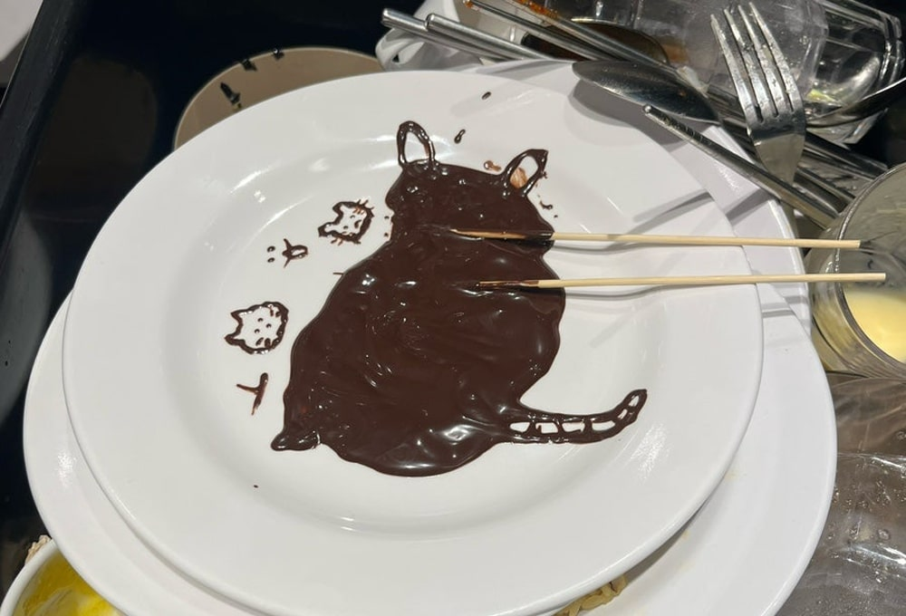
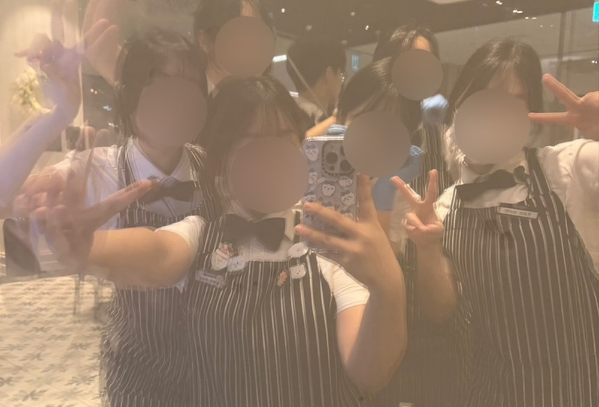

애슐리 퀸즈 홀 아르바이트 경험담
작년 2학기 허리 건강 이슈로 중도 휴학을 한 뒤, 한동안 누워 있었고 집, 병원, 운동을 반복했다. 많이 좋아졌을 겨울 무렵, 오랜 칩거 생활에 지쳐 당장이라도 나가서 일을 하고 사람들과 어울려야겠다는 생각이 들었다. 그래서 원래의 나라면 절대 지원하지 않았을 애슐리 퀸즈 알바에 덜컥 지원했다. 간혹 뷔페를 가면 수많은 그릇과 음식들이 어떻게 유지될 수 있는지, 장사가 잘되긴 하는지 늘 의문이었다. 애슐리에 4개월 가까이 근무 중인 현재, 어느 정도 알게 된 내용을 바탕으로 뷔페는 어떠한 업무 체계로 돌아가는 지와 뷔페 아르바이트에 대한 솔직 후기를 들려주고자 한다.
처음 출근하면 유니폼을 받고, 무전기 착용법을 배운다. 알바생의 경우 셔츠와 줄무늬 앞치마, 나비넥타이를 맨다. 제법 귀여운 디자인이다. 개인적으로는 검은색 신발과 머리망, 검정 바지를 준비해야 한다. 애슐리는 무전을 통해 소통하는데, 처음 무전을 끼면 주변 소리도 잘 안 들리고 근무 중인 전 직원에게 내 목소리가 전달된다는 부끄러움에 쉽사리 무전하기 어렵다. “네 확인했습니다.”는 아마 일하면서 가장 많이 하는 말일 것이다. 누군가 무전을 통해 무언가를 말했을 때 답변이 돌아오지 않으면 민망할 수 있기에 서로 재빠르게 대답해 주는 게 암묵적인 룰이다. 처음에는 이렇게 무전을 통해 말하는 게 힘들었다. 적응하면 부끄러움 따위 느끼지 않고 거침없이 무전할 수 있게 된다.
보통 처음 입사를 하면, 서버 일을 배운다. 서버는 서빙해주는 포지션이라고 보면 된다. 다만 뷔페 특성상 서빙할 일은 거의 없기에 홀을 전반적으로 돌아다니며 고객의 요구 사항을 들어주고, 다 먹은 그릇이 쌓여있다면 정리하고, 퇴점한 테이블을 치우는 역할이 주된 업무이다. 한가할 때는 쉬운 업무이지만 정신없이 바쁠 때는 체력적으로 굉장히 힘들다. 2만 보 가까이 걸을 때도 있다. 애슐리는 로봇이 있어 손님이 테이블로 로봇을 불러 자율적으로 그릇을 치울 수 있도록 하는데, 버서는 이 기물로 꽉 찬 로봇이나 카트를 비우는 것을 주로 한다. 홀에서 바쁘게 돌아다니는 직원들은 대체로 서버와 버서라고 보면 된다.
사이드는 고객 입장에서 보이지 않는 주방과 붙어 있는 뒷공간이다. 사이드에서는 버서가 홀에서 가지고 들어온 다 먹은 식기들을 분류하고, 식기세척기에서 나온 그릇을 닦아 다시 밖에 채워 놓는 일을 한다. 음식물과 여러 종류의 그릇이 뒤섞여 있는 상태에서 음식물, 그릇, 컵, 수저 등을 분류 및 정리하여 식기세척기를 돌리기 편한 상태로 만드는 것을 데코이라고 부른다. 장갑을 낀 상태긴 하지만 음식물을 많이 보고, 만져야 하므로 비위가 약하면 하기 어려울 수 있다. 데코이가 밀리면 모든 게 밀리기 때문에 사이드의 심장과 같다. 사이드 업무는 단순노동에 가까우나, 계속해서 쏟아지는 접시와 컵을 감당하는 건 쉽지 않다. 빠른 속도로 많은 기물을 처리하면서도 청결 또한 놓치지 않아야 한다.
 드리미는 음식이 있는 구역을 담당하는 포지션을 뜻한다. 보통 구역별로 한 명씩 사람을 두는데 콜파트 베이커리, 핫파트, 베버로 섹션이 나뉜다. 핫파트는 뜨거운 음식 라인, 콜파트는 스시처럼 차가운 음식, 베이커리는 디저트 라인, 베버는 음료 구역을 뜻한다. 드리미들은 각자가 맡은 구역의 음식을 수시로 체크하며 주방과 연결된 무전을 통해 필요한 음식을 요청하고, 이를 백업한다. 동시에 샐러드바 청결도 담당한다. 홀의 전반적인 상황이나 인기 메뉴 등을 파악하고 음식이 다 떨어지지도, 마감 때 많이 남지도 않도록 적절히 조절하는 것이 중요해서 어느 정도 센스가 필요하다. 음식 맛이 이상하다는 컴플레인 또한 대처할 수 있어야 하기에 연차가 차면 맡게 되는 업무이다.
정말 다 폐기한다. 방금 백업한 새 디저트가 그대로 남았을지라도 무조건 쓰레기통 행이다. 하지만 어느 순간부터 마감 때 폐기를 먹기 시작했다. 관리자들까지 합세하여 먹기 때문에 마감을 시작하면 주방 사람들이 피자, 파스타, 디저트 등을 나눠준다. 딸기 축제 시즌 동안 주방에서 손질하던 딸기를 손 한가득 받기도 했다. 우르르 나와 점장님 몰래 폐기를 먹으며 마감하는 시간은 뷔페 알바의 소소한 재미이다. 하지만 먹는 건 일부이고 버려지는 음식이 훨씬 많다. 흔히 쓰레기장에서 볼 수 있는 크고 길쭉한 음식물 쓰레기통을 하루에 몇 번이나 비워내는지 모르겠다. 손님들이 남기는 음식 또한 상상 이상으로 많다. 아마 뷔페는 환경오염에 크게 일조할 것이다.
일하는 지금도 여전히 가지고 있는 의문이다. 애슐리 같은 뷔페는 메뉴가 거의 똑같고, 특출난 맛이 아닌데 가격은 비싸니 재방문율이 낮을 것이라 생각했다. 그런데 일을 하다 보면 매일 같이 오는 단골손님이 생각보다 많다. 매장마다 차이가 있을 수 있지만 대체로 대기가 끊이질 않는다. 코로나 때 뷔페가 주춤하며 많이 죽었던 것으로 기억하는데 지금은 뷔페를 이용하는 사람이 많은 것 같다. 연말에 기흥점이 월매출 6억 정도가 나왔다는 소문을 듣기도 했다. 매출이 좋아서인지 큰 기업이어서인지 아르바이트생에게 복지도 좋은 편이다. 1분 단위까지 계산하여 연장, 야간, 공휴일 수당을 모두 챙겨주고, 휴게시간에 애슐리 음식을 밥으로 먹을 수도 있다. 노동법을 잘 지키기 때문에 돈 문제로 스트레스받을 일이 없다는 장점이 있다.
내향적인 성격과 저질 체력, 개미 목소리를 가진 나에게 애슐리 지원은 어울리지 않는 큰 도전이었다. 하지만 인간은 적응의 동물이 아니던가? 과거에는 산처럼 쌓은 접시를 옮기는 알바생을 보면 저게 어떻게 가능한가 싶었지만, 일한 지 한두 달만 지나면 접시를 턱 끝까지 쌓아 올린 채로 아무렇지 않게 걸어 다니는 나를 발견할 수 있다. 처음엔 작은 일에도 당황하고 목소리가 떨렸지만 이제 웬만한 일에 태연하게 대처할 수 있게 되었다. 무엇보다 좋았던 건 단체 알바 특성상 많은 사람들과 친해질 수 있다는 것이다. 각기 다른 삶을 살아온 또래 친구들과 교류할 수 있어 뜻깊었다. 또 장점이라고 해야할지 모르겠지만 직원 할인 쿠폰을 받기 때문에 이를 쓰려고 애슐리를 자주 가게 된다. 입사 전엔 뷔페를 가는 일이 손에 꼽았는데, 입사 후 이랜드 이츠 vip등급이 되었다. 가볍게 지원했던 애슐리 알바는 요즘 내 삶의 가장 큰 활력소이자 잊지 못할 기억의 한 편으로 남았다. 혹시 뷔페 알바를 해볼까 고민한 적이 있다면 무조건 추천하고 싶다! 젊을 때 한 번쯤 경험해 보면 즐거운 추억이 되리라 확신한다. 나 같은 사람도 잘 적응했으니 못할 사람은 없을 것 같다. 혹시 뷔페 알바에 대한 궁금증이 있었다면 이 글을 통해 어느 정도 해소가 되었기를···.
 